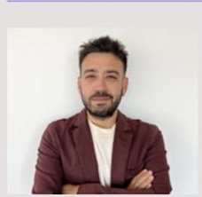
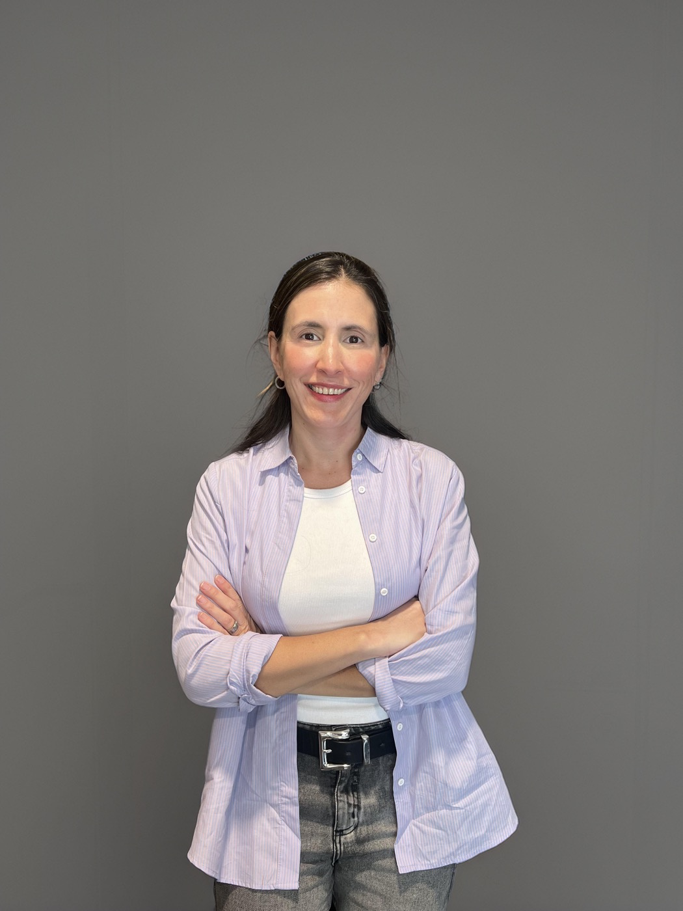
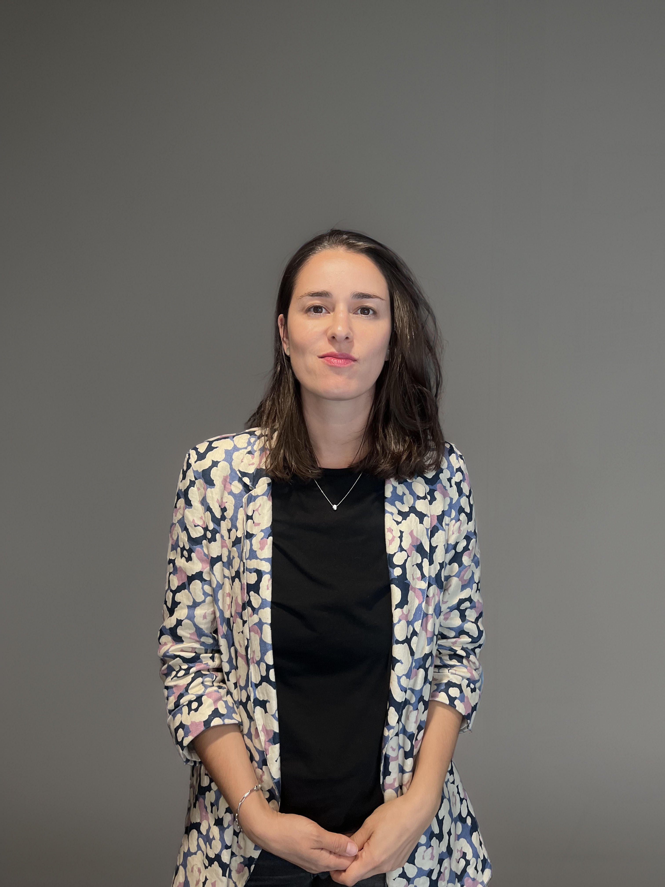

DobleA LAB
Taller de investigación aplicada
Cuatro módulos base, de 6 a 9 PM, en formato híbrido.
Pensado para traducir preguntas de investigación en decisiones, con herramientas concretas y lógica de trabajo replicable.
Un recorrido estructurado por el ciclo completo de la investigación aplicada.
No necesitas ser experto, pero sí llegar con interés por aprender y aplicar.
Somos un puente entre la investigación académica de frontera y el mundo de las organizaciones. Integramos rigor metodológico con una orientación práctica para apoyar la toma de decisiones en empresas, consultoras e instituciones públicas.
Porque no se queda solo en herramientas sueltas: ordena el proceso completo, desde la pregunta inicial hasta la lectura de resultados y su traducción en decisiones concretas.
Con una forma de trabajar más clara y replicable para diseñar estudios, elegir estrategias metodológicas, ordenar información, analizar datos y comunicar hallazgos con criterio.
Quieres trabajar mejor en investigación aplicada y ordenar de forma más rigurosa tu proceso de trabajo.
Cómo traducir una necesidad de información en una pregunta de investigación y un diseño metodológico adecuado.
Diseño de instrumentos de medición, calidad de datos y experimentos aplicados a la investigación.
Cómo trabajar con datos en investigación aplicada de manera ordenada, rigurosa y eficiente.
Criterios para evaluar resultados, identificar lo relevante y traducir hallazgos en decisiones.
Dejamos una mini encuesta abierta para priorizar mejor futuros talleres ad hoc y ver qué contenidos despiertan más interés.
Responder mini encuestaRecursos y ejemplos
Un ejemplo concreto del tipo de recurso aplicado que queremos ir subiendo a esta web. El gráfico muestra una estimación regional de la aprobación presidencial de Gabriel Boric en Chile, construida con microdatos públicos de la encuesta CEP 2025 y un modelo multinivel con postestratificación (MRP), una técnica desarrollada en este campo por Thomas Little y Andrew Gelman. La gracia es que CEP no está diseñada para ser representativa a nivel regional y, en varias regiones, hay pocas observaciones. Justamente por eso MRP importa: permite obtener porcentajes regionales mucho más robustos e informativos, incluso cuando el N local es bajo, en vez de leer los datos crudos como si cada región tuviera muestra suficiente.
Sirve como referencia, no como resumen suficiente. Estimación basada en CEP 2025, con trabajo de campo entre el 22 de septiembre y el 17 de octubre.
Fuente: microdatos públicos CEP N°95. Estimación propia con MRP. Como CEP no es representativa por región, el ajuste es precisamente lo que permite producir estimaciones regionales más plausibles con pocos casos locales.
El 29,4% nacional esconde un rango regional amplio: desde 18,6% en Los Lagos hasta 39,5% en Magallanes. Dicho simple, hablar solo de “la aprobación del presidente” deja fuera brechas territoriales de más de 20 puntos.
Metropolitana queda sobre la media y además tiene la base muestral más robusta. En regiones con pocos casos, la lectura tiene que ser más cuidadosa: ahí el valor del MRP es justamente ayudar a separar señal de ruido y hacer posible una estimación regional aunque la encuesta no haya sido diseñada para representar bien a cada región por separado.
Durante las próximas semanas iremos subiendo material para mostrar mejor el enfoque del taller y abrir parte de la cocina de trabajo de DobleA LAB. La idea es que la web vaya creciendo junto con el programa.
Equipo permanente

P.hD en Sociología Universidad de Cornell. Profesor en la Universidad Católica de Chile. Experto en movilidad social, modelación Bayesiana, estratificación y diseño de encuestas. Experiencia en consultoría, métodos experimentales y análisis de opinión pública.
P.hD en Ciencia Política de la Universidad de Columbia. Investigador postdoctoral en University of Southern California. Especialista en comportamiento político, diseño de encuestas, estadística aplicada, inferencia causal. Experiencia en el ámbito académico y en consultoría.

Socióloga de la Universidad Diego Portales, con Magíster en Políticas Públicas y Diplomado en Análisis de Datos Avanzado. Experta en estudios de mercado, branding y consultoría estratégica para organizaciones públicas y privadas.

Socióloga de la Pontificia Universidad Católica de Chile, con Diplomado en Marketing Estratégico. Especialista en investigación cualitativa y moderación de grupos de conversación en estudios de mercado.
Equipo asociado
PhD en Sociología y Política Social, Princeton. Profesora asistente en USC Dornsife. Especialista en demografía familiar, desigualdad de género y métodos cuantitativos aplicados.
PhD en Ciencia Política, Columbia. Profesor asistente en la Universidad de Maryland. Especialista en métodos cuantitativos, inferencia causal y comportamiento político.
PhD en Sociología de la Universidad de North Carolina, Chapel Hill. Profesora asistente en la Universidad Católica de Chile. Especialista en trabajo y familia, desigualdad de género en el mercado laboral y organizaciones.
Sociólogo y candidato a Doctor en Sociología en la Pontificia Universidad Católica de Chile. Investigador del Núcleo Milenio LM²C². Especialista en análisis de mercados laborales, redes, movilidad y segregación desde una perspectiva estructural.
No. Ayuda tener familiaridad básica con datos y encuestas, pero el taller no está pensado solo para personas que programan.
No. El foco es investigación aplicada, por lo que el contenido conversa con consultoría, empresas, sector público y también con quienes vienen del mundo académico.
Trabajaremos con la lógica detrás de distintas herramientas y mostraremos usos de software e IA aplicados al análisis de datos e investigación.
El taller está pensado como un recorrido completo. Si más adelante abrimos modalidades más flexibles, lo vamos a anunciar en esta misma web.
Sí. Ya tenemos definidas las fechas de los módulos y pronto subiremos un programa más específico con mayor detalle por sesión.
Sí. Vamos a ir subiendo visualizaciones, código, ejemplos y material complementario para que la web también funcione como vitrina del proyecto.
¿Listo para dar el siguiente paso?
Contacto: mpaz.carreno@dobleachile.cl · +56 9 747 646 63